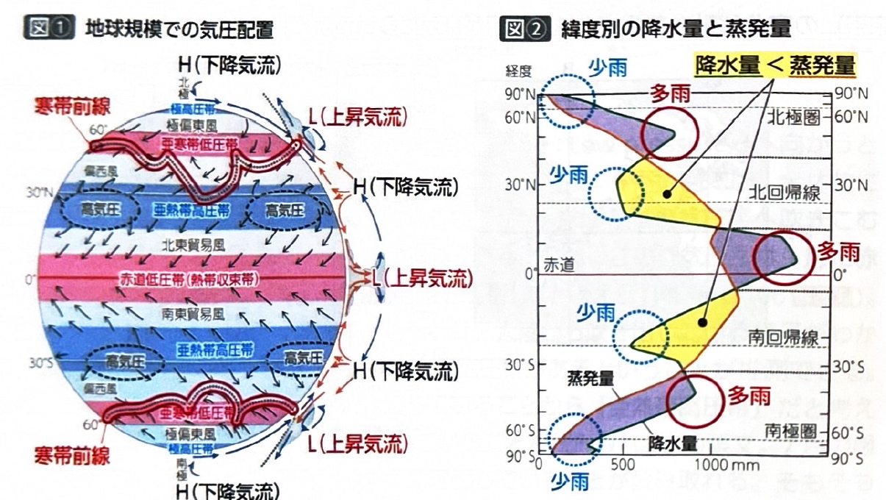
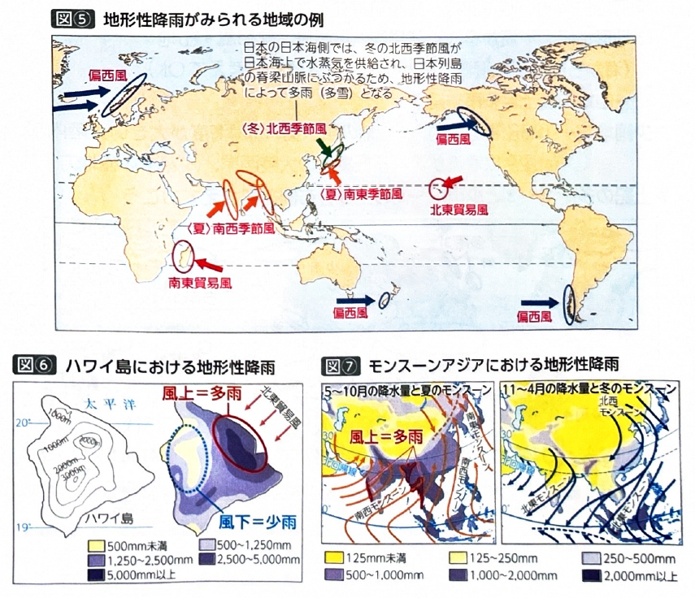
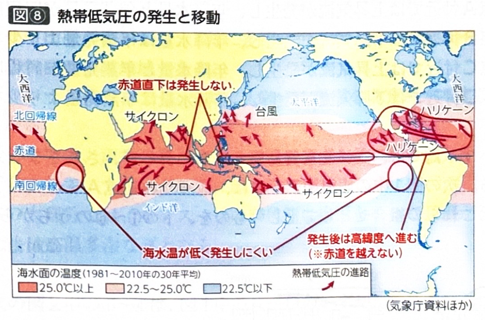

第2章 気候・植生・土壌 - 気圧と風、降水(2)
ポイント総復習
1. 降水のメカニズムと多雨地域
降水（雨が降ること）の最大のポイントは「上昇気流」です。水蒸気を含んだ空気が上に昇って雲ができやすい場所が、多雨地域となります。主に以下の3つのパターンがあります。
- 低気圧性降雨：赤道低圧帯や亜寒帯低圧帯など、低気圧の圏内で発生する上昇気流による降水。
- 前線性降雨：冷たい空気（寒気）と暖かい空気（暖気）がぶつかる前線（寒帯前線や梅雨前線など）付近で生じる上昇気流による降水。
- 地形性降雨：海から吹く湿った風（貿易風、偏西風、季節風など）が山地にぶつかって強制的に上昇させられることで降る雨。山地の風上側は多雨となります。

2. 緯度別の降水量と蒸発量
緯度帯によって、気圧帯の影響で降水量と蒸発量のバランスが大きく異なります。
- 赤道付近（赤道低圧帯）や緯度60度付近（亜寒帯低圧帯）では、上昇気流により降水量が蒸発量を上回ります。
- 緯度20〜30度付近（亜熱帯高圧帯）では、強い下降気流により乾燥するため、蒸発量が降水量を上回ります。

3. 少雨地域とその要因
雨が極端に少ない（少雨・乾燥）地域となるには、主に5つの要因があります。なぜ砂漠ができるのか、その理由を理解しましょう。
- 高圧帯の圏内：亜熱帯高圧帯など、下降気流が卓越する場所。（例：サハラ砂漠）
- 山地の風下側：山を越えて水分を失った乾いた風（フェーン）が吹き下ろす場所。これを雨陰（ういん）効果といいます。（例：パタゴニア）
- 隔海度が大きい大陸内部：海から遠く、湿った空気が届きにくい場所。（例：ゴビ砂漠、タクラマカン砂漠）
- 沖合に寒流が流れる低緯度の大陸西岸：冷たい海水によって下層の空気が冷やされて重くなり、大気が安定して上昇気流が起きないため。（例：アタカマ砂漠、ナミブ砂漠）
- 寒冷な極地方：極高圧帯に覆われ、空気が冷やされて下降気流が生じるため。降雪量も実は非常に少ないです。

基礎問題（理解度チェック）
Q1. 多雨地域の要因について、空欄を埋めなさい。
降水をもたらす主な要因は、空気が上に昇る
である。これが発生しやすい場所として、赤道付近などの
帯や、寒気と暖気がぶつかる
付近、および海からの湿った風が山地にぶつかる
側があり、これらは多雨地域となる。
Q2. 地形性降雨において、海からの湿った風が山地にぶつかる風上側では雨が多く降るが、山を越えた風下側では水分を失った乾燥した空気が吹き下ろすため、少雨（乾燥）地域となる。
Q3. 少雨（乾燥）地域の要因について、空欄を埋めなさい。
少雨地域となる主な要因として、下降気流が卓越する亜熱帯高圧帯などの
に覆われる地域、海から遠く水蒸気が届きにくい
、および沖合に
が流れる低緯度の大陸西岸などがあげられる。
Q4. 緯度帯ごとの降水量と蒸発量について、空欄を埋めなさい。
緯度帯による降水量と蒸発量のバランスについて、赤道付近の低緯度や緯度60度付近の高緯度では、上昇気流による降水量が蒸発量を
。一方、緯度20〜30度付近の中緯度帯（亜熱帯高圧帯）では、下降気流により乾燥するため、蒸発量が降水量を
。
Q5. 沖合に寒流が流れる低緯度の大陸西岸では、冷たい海水によって下層の空気が冷やされて重くなるため、上昇気流が活発に発生し、一年中雨が多い多雨地域となる。